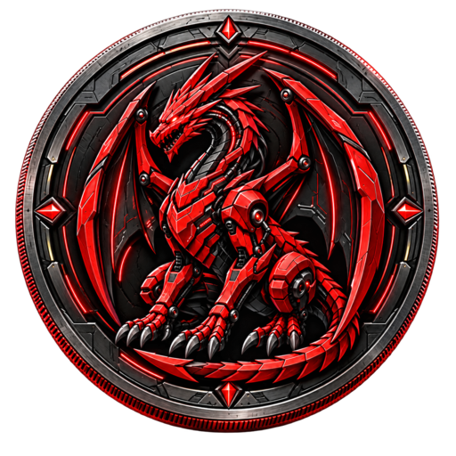

Dracul Coin
DRAC é um token ERC-20 na Base Mainnet, criado por Fábio Silva Monteiro e associado ao projeto Dracul Cybersec.
Identificação do token
Símbolo: DRAC · Rede: Base Mainnet (8453) · Decimais: 18
Contrato:0xb193cFE2E4A807Ff3dF920139bfA3785F8094c70
Verifique o endereço completo ao localizar o ativo. Outros tokens com o mesmo símbolo não indicam associação com este projeto.
Oferta e distribuição inicial
Oferta inicial e máxima: 100.000.000 DRAC. Sem função pública de emissão. Queimas podem reduzir a oferta total.
| Alocação | DRAC | Percentual |
|---|---|---|
| DAO / Timelock | 50.000.000 | 50% |
| Reserva de staking | 20.000.000 | 20% |
| Vesting da equipe | 15.000.000 | 15% |
| Liquidez | 10.000.000 | 10% |
| Ecossistema | 5.000.000 | 5% |
Alocação inicial não equivale à oferta em circulação. A reserva de staking está no contrato de staking; carteiras operacionais são distintas dos contratos. O vesting da equipe inicia em 06/10/2026, com cliff em 06/10/2027 e término em 05/10/2029 (UTC).
Tokenomics e custódiaContratos públicos
| Token DRAC | 0xb193cFE2E4A807Ff3dF920139bfA3785F8094c70 |
|---|---|
| Timelock / DAO | 0x78D17d3bb3Bb843462D67278622817315Faa6e76 |
| Contrato de vesting da equipe | 0x6Ec9881FCBf02e13374239653eaDC9573728681f |
| Governor | 0xF30d56332d575E1F37EB89841C157713C5968Ac4 |
| Contrato de staking | 0xdC5b4D7707303Cafb4308E42e3E6cB1813cC03cb |
| Pool Uniswap v2 WETH / DRAC | 0xb6e16DBaA61B188Ef6ccF845E38540471854C3c2 |
Mercado e governança
Mercado documentado: Uniswap v2 na Base, par WETH / DRAC, taxa da pool de 0,30%. A liquidez é pequena e experimental.
Governança: limiar de proposta de 1.000.000 DRAC, quorum de 10% da oferta no snapshot, atraso de votação de 1 dia, período de 5 dias e atraso mínimo do Timelock de 2 dias.
Transparência e segurança
Projeto experimental. Não há promessa de valorização ou retorno. O projeto não declara auditoria independente. Tokens depositados no contrato de staking não preservam automaticamente o poder de voto individual.
Criador e contato
Fábio Silva Monteiro · Dracul Cybersec
E-mail do projeto: support@draculcybersec.com. Com o domínio indisponível, utilize o GitHub para contato público. Nunca publique senhas ou chaves privadas nas issues.